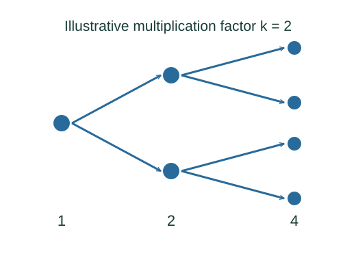

Derive the simplest chain-reaction growth law
A generation model counts how many effective next-generation fission neutrons arise from each current-generation neutron. Repeated multiplication distinguishes subcritical, critical and supercritical behaviour.
What the symbols mean
Nn: expected effective neutron population in generation n; keff: effective multiplication factor including losses; ℓg: idealized generation duration.
When this applies
A simplified discrete-generation model with constant keff and identical generation time. Real reactor dynamics also include delayed neutrons, spatial effects and feedback.
Developing the argument

Define the effective factor
Count expected neutrons that survive leakage and non-fission capture and cause the next fission generation. The ratio to the current effective population defines keff.
Repeat the recurrence
Applying the same multiplier n times gives a geometric sequence.
Classify the long-term trend
A factor below one makes the expected chain shrink; one maintains it on average; above one grows it in this fixed-factor model.
Relate generations to time under a strong simplification
If every generation takes ℓg, set n = t/ℓg. The equivalent exponential rate is ln keff divided by ℓg.
A worked example
With a fixed keff = 0.90, after ten generations the expected population is 0.90¹⁰ ≈ 0.349 of its starting value.
Derivation behind this calculation ↗A point to keep straight
This teaching model is not a reactor-control calculation. Delayed neutrons and feedback change the relation between keff and actual time behaviour.
Check the assumptions and derivation ↗